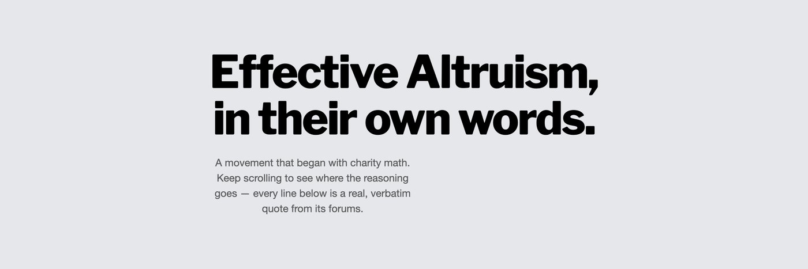

EA Explorer
Effective Altruism,
in their own words.
A public record of what the effective-altruism and AI-safety community argues for — drawn entirely from their own forum posts, quoted verbatim and linked to source. Three ways in: take the tour, read what they said, or map who is connected to whom.

Start here Take the guided tour New to all this? Scroll through a short narrative — from charity math to where the reasoning leads — built entirely from the movement's own words. The fastest way to see what Effective Altruism actually argues. Take the tour → Their words
Explore their words
Every verbatim quote — by topic, by person, fully searchable. What they said
about governing the world, moral patienthood, biting the bullet, and more.
Explore the quotes →
Their words
Explore their words
Every verbatim quote — by topic, by person, fully searchable. What they said
about governing the world, moral patienthood, biting the bullet, and more.
Explore the quotes →
 The network
Map the connections
The people, organizations, and money behind the ideas — mapped as a network
you can walk, one entity at a time.
Investigate the connections →
The network
Map the connections
The people, organizations, and money behind the ideas — mapped as a network
you can walk, one entity at a time.
Investigate the connections →
Every quote is verbatim and links to its source. Blockquotes were stripped before excerpting, so no one is shown saying words they were quoting from someone else. Quotes were reviewed against their surrounding context to show lines where the author appears to be stating their own view. The selection is representative, not exhaustive.
Built from public LessWrong / EA Forum / Alignment Forum archives.